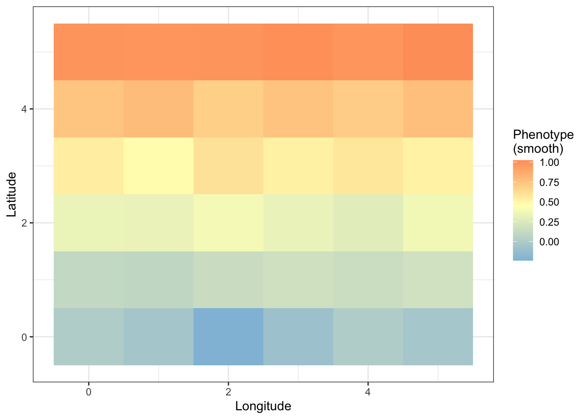
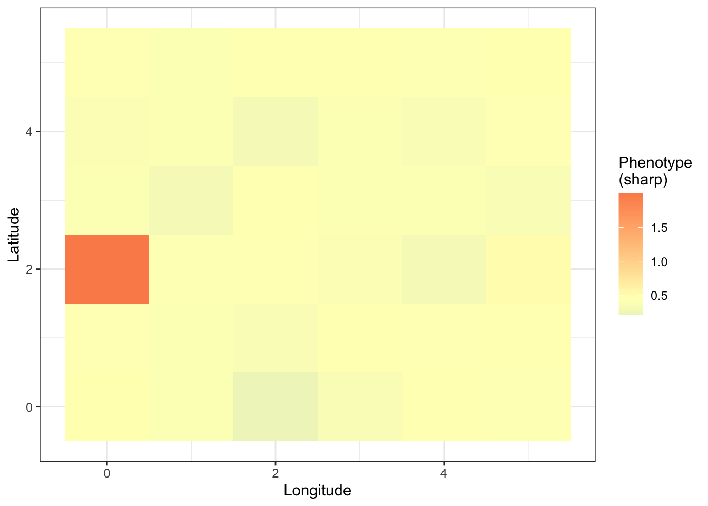

Last updated: 2020-12-22
Checks: 7 0
Knit directory: popstruct_scripts/
This reproducible R Markdown analysis was created with workflowr (version 1.6.2). The Checks tab describes the reproducibility checks that were applied when the results were created. The Past versions tab lists the development history.
Great! Since the R Markdown file has been committed to the Git repository, you know the exact version of the code that produced these results.
Great job! The global environment was empty. Objects defined in the global environment can affect the analysis in your R Markdown file in unknown ways. For reproduciblity it’s best to always run the code in an empty environment.
The command set.seed(20201202) was run prior to running the code in the R Markdown file. Setting a seed ensures that any results that rely on randomness, e.g. subsampling or permutations, are reproducible.
Great job! Recording the operating system, R version, and package versions is critical for reproducibility.
Nice! There were no cached chunks for this analysis, so you can be confident that you successfully produced the results during this run.
Great job! Using relative paths to the files within your workflowr project makes it easier to run your code on other machines.
Great! You are using Git for version control. Tracking code development and connecting the code version to the results is critical for reproducibility.
The results in this page were generated with repository version 99813ec. See the Past versions tab to see a history of the changes made to the R Markdown and HTML files.
Note that you need to be careful to ensure that all relevant files for the analysis have been committed to Git prior to generating the results (you can use wflow_publish or wflow_git_commit). workflowr only checks the R Markdown file, but you know if there are other scripts or data files that it depends on. Below is the status of the Git repository when the results were generated:
Ignored files:
Ignored: .DS_Store
Ignored: .Rproj.user/
Ignored: Archived/
Ignored: analysis/.DS_Store
Ignored: burden_msprime/.DS_Store
Ignored: burden_msprime/generate_burden/.DS_Store
Ignored: data/.DS_Store
Ignored: data/burden_msprime/
Ignored: data/burden_msprime2/
Ignored: data/gwas/
Ignored: data/ukmap/
Ignored: gwas/.DS_Store
Ignored: gwas/grid/.DS_Store
Ignored: gwas/grid/tau-9/.DS_Store
Ignored: gwas/grid/tau-9/scripts/.DS_Store
Ignored: gwas/grid/tau-9/scripts/generate_genotypes/.DS_Store
Ignored: gwas/grid/tau-9/scripts/gwas/.DS_Store
Ignored: gwas/grid/tau100/.DS_Store
Ignored: gwas/grid/tau100/scripts/.DS_Store
Ignored: gwas/grid/tau100/scripts/generate_genotypes/.DS_Store
Ignored: gwas/grid/tau100/scripts/gwas/.DS_Store
Ignored: gwas/ukb/.DS_Store
Ignored: gwas/ukb/scripts/.DS_Store
Ignored: optimize_migration_rate/.DS_Store
Ignored: optimize_migration_rate/complex_dem/.DS_Store
Ignored: optimize_migration_rate/grid/.DS_Store
Ignored: output/plots/
Ignored: pca_plots/.DS_Store
Ignored: prs/.DS_Store
Ignored: prs/grid/.DS_Store
Ignored: qqplots/.DS_Store
Ignored: qqplots/fixed_effects/.DS_Store
Ignored: qqplots/lmms/.DS_Store
Ignored: revisions/.DS_Store
Ignored: shared_scripts/gwas/
Ignored: shared_scripts/prs/
Ignored: shared_scripts/simphenotype/
Ignored: sib_analysis/.DS_Store
Ignored: sib_analysis/complex_dem/.DS_Store
Ignored: sib_analysis/grid/.DS_Store
Ignored: sib_analysis/grid/tau100/mates/
Ignored: simulating_genotypes/.DS_Store
Ignored: simulating_genotypes/grid/.DS_Store
Ignored: simulating_phenotypes/.DS_Store
Untracked files:
Untracked: analysis/biasvaccuracy_prsascertainment.Rmd
Untracked: analysis/biasvaccuracy_prsascertainment.nb.html
Untracked: analysis/plotting_prs_sib_effects.Rmd
Untracked: analysis/plotting_prs_sib_effects.nb.html
Untracked: analysis/plottingprs_distribution_gridt.Rmd
Untracked: analysis/plottingprs_distribution_gridt.nb.html
Untracked: analysis/plt_burden_association.Rmd
Untracked: analysis/plt_ukb_unrelated_prs.Rmd
Untracked: analysis/plt_ukb_unrelated_prs.nb.html
Untracked: analysis/prs_wt_finemapping.Rmd
Untracked: analysis/prs_wt_finemapping.nb.html
Unstaged changes:
Modified: analysis/_site.yml
Modified: analysis/index.Rmd
Modified: burden_msprime/plt_burden_association_t100.Rmd
Modified: burden_msprime/plt_burden_association_t100.nb.html
Deleted: revisions/figuring_out_prediction_accuracy.Rmd
Deleted: revisions/figuring_out_prediction_accuracy.nb.html
Deleted: revisions/figuring_out_prediction_accuracy2.Rmd
Deleted: revisions/figuring_out_prediction_accuracy2.nb.html
Note that any generated files, e.g. HTML, png, CSS, etc., are not included in this status report because it is ok for generated content to have uncommitted changes.
These are the previous versions of the repository in which changes were made to the R Markdown (analysis/Simulating_heritable_phenotypes.Rmd) and HTML (docs/Simulating_heritable_phenotypes.html) files. If you’ve configured a remote Git repository (see ?wflow_git_remote), click on the hyperlinks in the table below to view the files as they were in that past version.
| File | Version | Author | Date | Message |
|---|---|---|---|---|
| Rmd | 99813ec | Arslan-Zaidi | 2020-12-03 | organizing workflowr project |
Here, I am going to demonstrate how we simulated heritable phenotypes with environmental stratification. For illustration, I am going to use the genotypes simulated under the `recent’ structure model.
suppressWarnings(suppressMessages({
library(data.table)
library(dplyr)
library(tidyr)
library(rprojroot)
library(ggplot2)
}))
F = is_rstudio_project$make_fix_file()Read a file containing all variants and their minor allele frequency. This is important because the effects we assign to causal variants will depend on their frequency with rare variants having larger effects and common variants having smaller effects.
set.seed(123)
#frequency file path
freq_file="data/gwas/grid/genotypes/tau100/ss500/train/genotypes/genos_gridt100_l1e7_ss750_m0.05_chr1_20.rmdup.train.snps.frq.afreq"
# load variant frequency file
p = fread(F(freq_file))
colnames(p)=c("CHROM","ID","REF","ALT","ALT_FREQS","COUNT")
p=p[,c("CHROM","ID","ALT_FREQS")]
p[, c("chr", "position","ref","alt") := tstrsplit(ID, "_", fixed=TRUE)]
p = p[,c("CHROM","ID","position","ALT_FREQS")]
p$position = as.numeric(p$position)Now sample 2,000 variants at random such that they are uniformly spaced across the genome with ~ 100Kb between them. We do this for each chromosome separately.
#write function to do this.
sample.variant=function(df1){
#sample first variant
position1 = as.numeric( sample_n( df1[ position < 1e5, 'position' ], 1 ))
#select all other variants to be at least 100kb apart
#minimum positions for each window
positions = position1 + seq(0,99)*1e5
#pick variants that are further than these
positions.adj = lapply( positions, function(x){
ix = min( df1[position > x, which =TRUE ] )
return(df1[ix])
})
#return datatable
positions.adj = bind_rows(positions.adj)
return(positions.adj)
}
#carry this out grouped by chromosome
causal.variants <- p[, sample.variant(.SD), by=CHROM]
#let's remove NAs if there are any.
causal.variants = causal.variants%>%drop_na(ID)Now, simulate effect sizes for these variants. I’m going to model the genetic architecture after that of height (see Schoech et al. 2019) such that the effect size of a variant i,
\[\beta_i \sim N( 0, \sigma_{l}^2 . [p_i.(1-p_i)]^\alpha )\]
where:
\(\sigma_l\) = the frequency-independent component of the genetic variance associated with variant \(i\),
\(p_i\) = the frequency of the \(i_{th}\) allele,
\(\alpha\) = the scaling factor which determines how the effect size is related to allele frequency.
Under this model, the total contribution of variant \(i\) to the genetic variance is
\[\sigma_{i}^2 = \sigma_l^2.[2.p_i.(1-p_i)]^{\alpha+1}\]
\[\sigma_{g}^2 = Var(\beta_iX_i) = \mathbb{E}[\beta_i^2X_i^2] - \mathbb{E}[\beta_iX_i]^2\] \[ = \mathbb{E}[\beta_i^2].\mathbb{E}[X_i^2] - (\mathbb{E}[\beta_i].\mathbb{E}[X_i])^2\] \[ = \sigma_l^2.2p_i(1-p_i)[p_i(1-p_i)]^\alpha\] \[ = \sigma_l^2.[2p_i(1-p_i)]^{1+\alpha}\]
And the total additive genetic variance across \(M\) variants is
\[\sigma_{g}^2 = \sum_{i=1}^M\sigma_{i}^2= \sum_{i=1}^M\sigma^2_{l}.[2.p_i.(1-p_i)]^{\alpha+1}\]
We would like to choose effect sizes such that the total heritability is 0.8. To do this, we must first compute the required value of \(\sigma^2_{l}\), the frequency-indpendent component of genetic variance. We use the frequencies of the variants we chose, \(\alpha=-0.4\), and the desired and \(\sigma_g^2\) of 0.8 to do this.
\[\sigma^2_{l} = \frac{0.8}{ \sum_{i=1}^M[2.p_i.(1-p_i)]^{1-0.4} }\]
#calculate the independent component of variance required
sigma2_l = 0.8 / sum( sapply( causal.variants$ALT_FREQS,function(x){
beta= ( 2*x*(1-x)) ^ (1-0.4)
return(beta)
}))Next, we sample the effect sizes for each variant.
#sample maf-dependent effects using the model above
causal.variants$beta = sapply( causal.variants$ALT_FREQS , function(x){
beta = rnorm( 1 , mean = 0, sd = sqrt(sigma2_l * (2*x*(1-x))^-0.4 ))
})
#let's calculate sigma2_g to confirm that the total genetic variance is indeed 0.8
sigma2_g = sum( mapply(function(b,p){ b^2* 2*p*(1-p) }, causal.variants$beta, causal.variants$ALT_FREQS))
print(paste("sigma2_g : ",round(sigma2_g,3)))[1] "sigma2_g : 0.76"Now, we use these effects and the genotypes to calculate the simulated genetic value for each \(j^{th}\) individual in PLINK (computation not shown):
\(g_j = \sum_{i=1}^M \beta_iX_{ij}\)
Read the genetic values and the `pop’ file, a file which contains which deme an individual belongs to and their latitude and longitude values.
gvalue_file = "data/gwas/grid/genotypes/tau100/ss500/train/genotypes/genos_gridt100_l1e7_ss750_m0.05_chr1_20.rmdup.train.1.thinned_100kb.gvalue.sscore"
popfile = "data/gwas/grid/genotypes/tau100/ss500/iid_train.txt"
prs=fread(F(gvalue_file))
colnames(prs)<-c("IID","dosage","gvalue")
sample_size=nrow(prs)
#load file containing the deme id and latitude and longitude for each individual
pop=fread(F(popfile))
#add this info to prs file
prs=merge(prs, pop, by="IID", sort=FALSE)Add environmental component to the genetic values such that: a) the phenotype is either smoothly (North-South gradient) or sharply distributed, and b) the phenotype has a heritability of 0.8.
#smooth effect - latitude (OG effect)
prs$smooth = sapply(prs$latitude,
function(x){
rnorm(n = 1,
mean = (x + 1)/3,
sd = sqrt(1 - 0.8))})
#sharp environmental effect
prs$sharp = sapply(prs$deme,
function(x){
if(x == 2){
rnorm(n = 1,
mean = 2,
sd = sqrt(1 - 0.8)) }else{
rnorm(n = 1,
mean = 0,
sd = sqrt(1 - 0.8))
}})Scale the effects such that the heritability is 0.8.
prs$sharp = scale( prs$sharp , scale = T) * sqrt( 1 - 0.8)
prs$smooth = scale( prs$smooth, scale = T) * sqrt(1 - 0.8)
#add prs to each of the environmental effects
prs = prs %>%
mutate(smooth = gvalue + smooth,
sharp = gvalue + sharp)
#the correlation between the phenotype and the genetic values should be ~ 0.8
print(paste("h2 (smooth) :",
round(cor(prs$gvalue,
prs$smooth)^2,2)))[1] "h2 (smooth) : 0.8"print(paste("h2 (sharp) :",
round(cor(prs$gvalue,
prs$sharp)^2,2)))[1] "h2 (sharp) : 0.8"Now let’s plot the spatial distribution of the mean phenotype within each deme.
For the smooth effect:
prs_mean = prs%>%
group_by(deme,longitude,latitude)%>%
summarize(smooth = mean(smooth),
sharp = mean(sharp))`summarise()` regrouping output by 'deme', 'longitude' (override with `.groups` argument)midpoint_sm = mean(prs_mean$smooth)
prsplot_sm=ggplot(prs_mean)+
geom_tile(aes(longitude,latitude,fill=smooth))+
scale_fill_gradient2(high = "#fc8d59",
mid = "#ffffbf",
low = "#91bfdb",
midpoint = midpoint_sm)+
theme_bw()+
labs(x="Longitude",
y="Latitude",
fill="Phenotype\n(smooth)")
prsplot_sm
For the sharp effect:
midpoint_shp = mean(prs_mean$sharp)
prsplot_shp=ggplot(prs_mean)+
geom_tile(aes(longitude,latitude,fill=sharp))+
scale_fill_gradient2(high = "#fc8d59",
mid = "#ffffbf",
low = "#91bfdb",
midpoint = midpoint_shp)+
theme_bw()+
labs(x="Longitude",
y="Latitude",
fill="Phenotype\n(sharp)")
prsplot_shp
sessionInfo()R version 4.0.3 (2020-10-10)
Platform: x86_64-apple-darwin17.0 (64-bit)
Running under: macOS Catalina 10.15.7
Matrix products: default
BLAS: /Library/Frameworks/R.framework/Versions/4.0/Resources/lib/libRblas.dylib
LAPACK: /Library/Frameworks/R.framework/Versions/4.0/Resources/lib/libRlapack.dylib
locale:
[1] en_US.UTF-8/en_US.UTF-8/en_US.UTF-8/C/en_US.UTF-8/en_US.UTF-8
attached base packages:
[1] stats graphics grDevices utils datasets methods base
other attached packages:
[1] ggplot2_3.3.2 rprojroot_1.3-2 tidyr_1.1.2 dplyr_1.0.2
[5] data.table_1.13.2 workflowr_1.6.2
loaded via a namespace (and not attached):
[1] Rcpp_1.0.5 pillar_1.4.6 compiler_4.0.3 later_1.1.0.1
[5] git2r_0.27.1 tools_4.0.3 digest_0.6.27 gtable_0.3.0
[9] evaluate_0.14 lifecycle_0.2.0 tibble_3.0.4 pkgconfig_2.0.3
[13] rlang_0.4.8 rstudioapi_0.11 yaml_2.2.1 xfun_0.19
[17] withr_2.3.0 stringr_1.4.0 knitr_1.30 generics_0.1.0
[21] fs_1.5.0 vctrs_0.3.4 grid_4.0.3 tidyselect_1.1.0
[25] glue_1.4.2 R6_2.5.0 rmarkdown_2.5 farver_2.0.3
[29] purrr_0.3.4 magrittr_1.5 whisker_0.4 scales_1.1.1
[33] backports_1.1.10 promises_1.1.1 ellipsis_0.3.1 htmltools_0.5.0
[37] colorspace_1.4-1 httpuv_1.5.4 labeling_0.4.2 stringi_1.5.3
[41] munsell_0.5.0 crayon_1.3.4